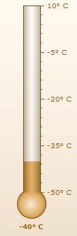

| Creating a simple Thermometer gauge |
As an example for thermometer gauge, we will plot the temperature of Antarctica. The final result will look something as under: |
|  |
The various steps involved in creating this thermometer gauge are:
|
| Data for the gauge |
| The XML/JSON for the gauge can be listed as under: |
The thermometer gauge for the above data will look as under: |
| See it live! |
| Explanation |
First of all comes the <chart> element which is the starting element for any chart/gauge/graph that you create using FusionWidgets. Now we define the lower and upper limits of the gauge scale. To define the limits, we use the lowerLimit and upperLimit attributes of the <chart> element. We also set the palette number and degree character as number suffix using the palette and numberSuffix attributes. |
| After that, we set the value of the gauge using the <value> element as shown under: |
|
For detailed explanation on JSON data format click here. |
| And this finishes our first thermometer gauge. |